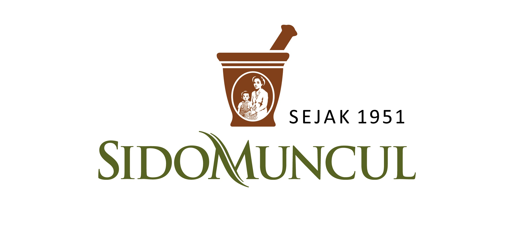
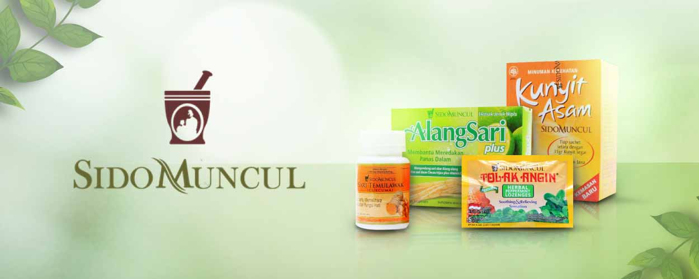

PT Sido Muncul Tbk.
Sido Muncul (SIDO) adalah produsen jamu terbesar dan termodern di Indonesia dengan pangsa pasar terbesar untuk kategori produk jamu tradisional. Kami memiliki lebih dari 300 jenis produk yang sangat akrab dan dekat dengan konsumen Indonesia. Tolak Angin dan Kuku Bima Ener-G! Adalah salah satu produk unggulan kami yang telah banyak dikenal selama puluhan tahun. Kami berkomitmen untuk berkembang sejalan dengan prinsip Manusia, Bumi, dan Laba untuk menciptakan perusahaan yang berkesinambungan dan bertanggung jawab.
PORTOFOLIO PRODUK YANG KOMPREHENSIF DENGAN NILAI MEREK TINGGI
Inovasi produk adalah kekuatan kami. Produk yang kami kembangkan didasarkan pada penelitian yang baik untuk memenuhi kebutuhan konsumen dan meningkatkan kualitas hidup mereka. Kami telah memodernkan jamu untuk memenuhi gaya hidup masa kini konsumen Indonesia dengan tetap menggunakan rempah dan tanaman obat asli Indonesia yang telah teruji khasiatnya secara turun temurun.
Tolak Angin adalah kisah perjalanan sebuah jamu tradisional menjadi produk jamu modern yang sangat diandalkan oleh masyarakat Indonesia. Seperti namanya, Tolak Angin dibuat dari ramuan jamu untuk meringankan gejala masuk angin dan menguatkan daya tahan tubuh. Tolak Angin adalah perintis jamu cair siap minum yang dapat dikonsumsi kapanpun, dimanapun.
Kuku Bima Ener-G! memprakarsai minuman energi rasa buah di Indonesia. Dengan membelakangi kaidah biasa perumusan, rasa, dan warna minuman energi, Kuku Bima Ener-G! telah mengubah kategori minuman energi melalui perspektif segarnya.
JARINGAN DISTRIBUSI YANG KUAT DI INDONESIA
Muncul Mekar, anak usaha Sido Muncul, bekerja sama dengan 122 distributor yang melayani lebih dari 100,000 pedagang grosir dan eceran yang bergerak di bidang perdagangan umum dan modern di Indonesia.
MENGEMBANGKAN POTENSI PASAR EKSPOR
Produk-produk kami telah tersedia di mancanegara. Untuk mengembangkan pasar ekspor lebih jauh lagi, kami telah mendirikan sebuah kantor cabang di Filipina dan anak usaha di Nigeria.